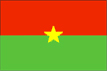
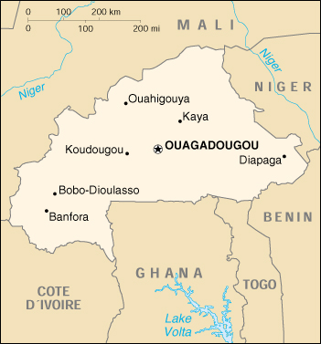

{kind=link}


| Burkina Faso |  |
|
|  | |
| Introduction |
Background: Independence from France came to Burkina Faso (formerly Upper Volta) in 1960. Governmental instability during the 1970s and 1980s was followed by multiparty elections in the early 1990s. Several hundred thousand farm workers migrate south every year to Cote d'Ivoire and Ghana.
| Geography |
Location: Western Africa, north of Ghana
Geographic coordinates: 13 00 N, 2 00 W
Map references: Africa
Area:
total:
274,200 sq km
land:
273,800 sq km
water:
400 sq km
Area - comparative: slightly larger than Colorado
Land boundaries:
total:
3,192 km
border countries:
Benin 306 km, Cote d'Ivoire 584 km, Ghana 548 km, Mali 1,000 km, Niger 628 km, Togo 126 km
Coastline: 0 km (landlocked)
Maritime claims: none (landlocked)
Climate: tropical; warm, dry winters; hot, wet summers
Terrain: mostly flat to dissected, undulating plains; hills in west and southeast
Elevation extremes:
lowest point:
Mouhoun (Black Volta) River 200 m
highest point:
Tena Kourou 749 m
Natural resources: manganese, limestone, marble; small deposits of gold, antimony, copper, nickel, bauxite, lead, phosphates, zinc, silver
Land use:
arable land:
13%
permanent crops:
0%
permanent pastures:
22%
forests and woodland:
50%
other:
15% (1993 est.)
Irrigated land: 200 sq km (1993 est.)
Natural hazards: recurring droughts
Environment - current issues: recent droughts and desertification severely affecting agricultural activities, population distribution, and the economy; overgrazing; soil degradation; deforestation
Environment - international agreements:
party to:
Biodiversity, Climate Change, Desertification, Endangered Species, Hazardous Wastes, Marine Life Conservation, Ozone Layer Protection, Wetlands
signed, but not ratified:
Law of the Sea, Nuclear Test Ban
Geography - note: landlocked
| People |
Population:
11,946,065
note:
estimates for this country explicitly take into account the effects of excess mortality due to AIDS; this can result in lower life expectancy, higher infant mortality and death rates, lower population and growth rates, and changes in the distribution of population by age and sex than would otherwise be expected (July 2000 est.)
Age structure:
0-14 years:
48% (male 2,866,361; female 2,822,990)
15-64 years:
49% (male 2,808,797; female 3,097,048)
65 years and over:
3% (male 149,474; female 201,395) (2000 est.)
Population growth rate: 2.71% (2000 est.)
Birth rate: 45.26 births/1,000 population (2000 est.)
Death rate: 17.04 deaths/1,000 population (2000 est.)
Net migration rate: -1.1 migrant(s)/1,000 population (2000 est.)
Sex ratio:
at birth:
1.03 male(s)/female
under 15 years:
1.02 male(s)/female
15-64 years:
0.91 male(s)/female
65 years and over:
0.74 male(s)/female
total population:
0.95 male(s)/female (2000 est.)
Infant mortality rate: 108.53 deaths/1,000 live births (2000 est.)
Life expectancy at birth:
total population:
46.73 years
male:
46.29 years
female:
47.18 years (2000 est.)
Total fertility rate: 6.44 children born/woman (2000 est.)
Nationality:
noun:
Burkinabe (singular and plural)
adjective:
Burkinabe
Ethnic groups: Mossi over 40%, Gurunsi, Senufo, Lobi, Bobo, Mande, Fulani
Religions: indigenous beliefs 40%, Muslim 50%, Christian (mainly Roman Catholic) 10%
Languages: French (official), native African languages belonging to Sudanic family spoken by 90% of the population
Literacy:
definition:
age 15 and over can read and write
total population:
19.2%
male:
29.5%
female:
9.2% (1995 est.)
| Government |
Country name:
conventional long form:
none
conventional short form:
Burkina Faso
former:
Upper Volta
Data code: UV
Government type: parliamentary
Capital: Ouagadougou
Administrative divisions:
30 provinces; Bam, Bazega, Bougouriba, Boulgou, Boulkiemde, Ganzourgou, Gnagna, Gourma, Houe, Kadiogo, Kenedougou, Komoe, Kossi, Kouritenga, Mouhoun, Namentenga, Naouri, Oubritenga, Oudalan, Passore, Poni, Sanguie, Sanmatenga, Seno, Sissili, Soum, Sourou, Tapoa, Yatenga, Zoundweogo
note:
a new electoral code was approved by the National Assembly in January 1997; the number of administrative provinces was increased from 30 to 45 (Bale, Bam, Banwa, Bazega, Bougouriba, Boulgou, Boulkiemde, Comoe, Ganzourgou, Gnagna, Gourma, Houet, Ioba, Kadiogo, Kenedougou, Komandjari, Kompienga, Kossi, Koupelogo, Kouritenga, Kourweogo, Leraba, Loroum, Mouhoun, Nahouri, Namentenga, Nayala, Naumbiel, Oubritenga, Oudalan, Passore, Poni, Samentenga, Sanguie, Seno, Sissili, Soum, Sourou, Tapoa, Tuy, Yagha, Yatenga, Ziro, Zondomo, Zoundweogo), however, this change has not yet been approved by the US Board on Geographic Names
Independence: 5 August 1960 (from France)
National holiday: Anniversary of the Revolution, 4 August (1983)
Constitution: 2 June 1991 approved by referendum; 11 June 1991 formally adopted
Legal system: based on French civil law system and customary law
Suffrage: universal
Executive branch:
chief of state:
President Captain Blaise COMPAORE (since 15 October 1987)
head of government:
Prime Minister Kadre Desire OUEDRAOGO (since 6 February 1996)
cabinet:
Council of Ministers appointed by the president on the recommendation of the prime minister
elections:
president elected by popular vote for a seven-year term; the president may serve unlimited terms; election last held 15 November 1998 (next to be held NA 2005); prime minister appointed by the president with the consent of the legislature
election results:
Blaise COMPAORE reelected president with 88% percent of the vote, with 56% of voter turnout
note:
despite his reelection, President COMPAORE faces a growing political crisis due to his mishandling of an investigation into the assassination of a newspaper editor and pressure for political reform
Legislative branch:
bicameral; consists of a National Assembly or Assemblee des Deputes Populaires (ADP) (111 seats; members are elected by popular vote to serve five-year terms) and the purely consultative Chamber of Representations or Chambre des Representants (178 seats; members are appointed to serve three-year terms)
elections:
National Assembly election last held 11 May 1997 (next to be held NA 2002)
election results:
percent of vote by party - NA; seats by party - CDP 101, PDP 6, RDA 2, ADF 2
Judicial branch: Supreme Court; Appeals Court
Political parties and leaders: African Democratic Rally or RDA [Gerard Kango OUEDRAOGO, Clement SANOU]; Alliance for Democracy and Federation or ADF [Herman YAMEOGO]; Congress for Democracy and Progress or CDP [Din Salif SAWADAGO]; Group for Progressive Democrats or GDP [Issa TIENDREBEOGO]; Movement for Tolerance and Progress or MTP [Noyabtigungu Congo KABORE]; Party for African Independence or PAI [leader NA]; Party for Democracy and Progress or PDP [Joseph KI-ZERBO]; Party for Progress and Social Development or PPDS [leader NA]; Union of Greens for the Development of Burkina Faso or UVDB [Ram OVEDRAGO]
Political pressure groups and leaders: Burkinabe General Confederation of Labor or CGTB; Burkinabe Movement for Human Rights or HBDHP; Group of 14 February; National Confederation of Burkinabe Workers or CNTB; National Organization of Free Unions or ONSL; watchdog/political action groups throughout the country in both organizations and communities
International organization participation: ACCT, ACP, AfDB, CCC, ECA, ECOWAS, Entente, FAO, FZ, G-77, IAEA, IBRD, ICAO, ICC, ICFTU, ICRM, IDA, IDB, IFAD, IFC, IFRCS, ILO, IMF, Intelsat, Interpol, IOC, ITU, NAM, OAU, OIC, OPCW, PCA, UN, UNCTAD, UNESCO, UNIDO, UPU, WADB, WADB (regional), WAEMU, WCL, WFTU, WHO, WIPO, WMO, WToO, WTrO
Diplomatic representation in the US:
chief of mission:
Ambassador Bruno ZIDOUEMBA
chancery:
2340 Massachusetts Avenue NW, Washington, DC 20008
telephone:
[1] (202) 332-5577
FAX:
[1] (202) 667-1882
Diplomatic representation from the US:
chief of mission:
Ambassador Jimmy J. KOLKER
embassy:
Avenue Raoul Follerau, Ouagadougou
mailing address:
01 B. P. 35, Ouagadougou
telephone:
[226] 306723 through 306725
FAX:
[226] 303890
Flag description: two equal horizontal bands of red (top) and green with a yellow five-pointed star in the center; uses the popular pan-African colors of Ethiopia
| Economy |
Economy - overview: One of the poorest countries in the world, landlocked Burkina Faso has a high population density, few natural resources, and a fragile soil. About 90% of the population is engaged in (mainly subsistence) agriculture which is highly vulnerable to variations in rainfall. Industry remains dominated by unprofitable government-controlled corporations. Following the African franc currency devaluation in January 1994 the government updated its development program in conjunction with international agencies, and exports and economic growth have increased. Maintenance of its macroeconomic progress in 2000-2001 depends on continued low inflation, reduction in the trade deficit, and reforms designed to encourage private investment.
GDP: purchasing power parity - $12.4 billion (1999 est.)
GDP - real growth rate: 5.5% (1999 est.)
GDP - per capita: purchasing power parity - $1,100 (1999 est.)
GDP - composition by sector:
agriculture:
36%
industry:
20%
services:
44% (1997)
Population below poverty line: NA%
Household income or consumption by percentage share:
lowest 10%:
NA%
highest 10%:
NA%
Inflation rate (consumer prices): 2.5% (1999 est.)
Labor force:
4.679 million (persons 10 years old and over, according to a sample survey taken in 1991)
note:
a large part of the male labor force migrates annually to neighboring countries for seasonal employment
Labor force - by occupation: agriculture NA%, industry NA%, services NA%
Unemployment rate: NA%
Budget:
revenues:
$277 million
expenditures:
$492 million, including capital expenditures of $233 million (1995 est.)
Industries: cotton lint, beverages, agricultural processing, soap, cigarettes, textiles, gold
Industrial production growth rate: 4.2% (1995)
Electricity - production: 225 million kWh (1998)
Electricity - production by source:
fossil fuel:
64.44%
hydro:
35.56%
nuclear:
0%
other:
0% (1998)
Electricity - consumption: 209 million kWh (1998)
Electricity - exports: 0 kWh (1998)
Electricity - imports: 0 kWh (1998)
Agriculture - products: peanuts, shea nuts, sesame, cotton, sorghum, millet, corn, rice; livestock
Exports: $311 million (f.o.b., 1998 est.)
Exports - commodities: cotton, animal products, gold
Exports - partners: Cote d'Ivoire, Taiwan, France, Colombia, Italy, Mali
Imports: $572 million (f.o.b., 1998 est.)
Imports - commodities: machinery, food products, petroleum
Imports - partners: Cote d'Ivoire, France, Senegal, Togo, Nigeria, US
Debt - external: $1.3 billion (1997)
Economic aid - recipient: $484.1 million (1995)
Currency: 1 Communaute Financiere Africaine franc (CFAF) = 100 centimes
Exchange rates:
Communaute Financiere Africaine francs (CFAF) per US$1 - 647.25 (January 2000), 615.70 (1999), 589.95 (1998), 583.67 (1997), 511.55 (1996), 499.15 (1995)
note:
since 1 January 1999, the CFAF franc is pegged to the euro at a rate of 655.957 CFA francs per euro
Fiscal year: calendar year
| Communications |
Telephones - main lines in use: 30,000 (1995)
Telephones - mobile cellular: 0 (1995)
Telephone system:
all services only fair
domestic:
microwave radio relay, open wire, and radiotelephone communication stations
international:
satellite earth station - 1 Intelsat (Atlantic Ocean)
Radio broadcast stations: AM 2, FM 17, shortwave 1 (1998)
Radios: 370,000 (1997)
Television broadcast stations: 1 (1997)
Televisions: 100,000 (1997)
Internet Service Providers (ISPs): 1 (1999)
| Transportation |
Railways:
total:
622 km (517 km from Ouagadougou to the Cote d'Ivoire border and 105 km from Ouagadougou to Kaya)
narrow gauge:
622 km 1.000-m gauge (1995 est.)
Highways:
total:
12,506 km
paved:
2,001 km
unpaved:
10,505 km (1996 est.)
Ports and harbors: none
Airports: 33 (1999 est.)
Airports - with paved runways:
total:
2
over 3,047 m:
1
2,438 to 3,047 m:
1 (1999 est.)
Airports - with unpaved runways:
total:
31
2,438 to 3,047 m:
1
1,524 to 2,437 m:
1
914 to 1,523 m:
13
under 914 m:
16 (1999 est.)
| Military |
Military branches: Army, Air Force, National Gendarmerie, National Police, People's Militia
Military manpower - availability:
males age 15-49:
2,500,962 (2000 est.)
Military manpower - fit for military service:
males age 15-49:
1,282,483 (2000 est.)
Military expenditures - dollar figure: $66 million (FY96)
Military expenditures - percent of GDP: 2% (FY96)
| Transnational Issues |
Disputes - international: none